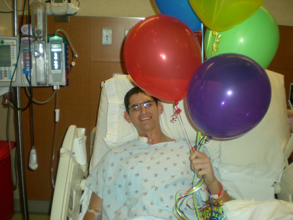

Weighing in at 195 pounds of pure muscle he is doing amazingly well. It has been just over two years now and you hardly tell with Jakes attitude. He is now officially retired from the Coast Guard (at 23) and taking it easy. Still on his daily regimen of 14 pills a day and at the gym 5 days a week. Going to school full time at Florida State College in Jacksonville, FL studying Aerospace Engineering. Thanks everyone for sending your love.
Year One
Today is a very important day for me and everyone around me. One year ago today I was in Mayo Clinic being rolled into the surgery room and being transplanted with a new liver which stopped the clock of death for me leaving this world at one day left on the clock. Today I am putting more weight up in the weight room and doing MMA, which has put me in my best shape ever and diet. I am doing the career path to be a pilot, which is what i wanted to do since I was 12. I am the happiest ever and had the best people around me to care for me by friends and family I am truly thankful for everything that they have done for me and I am in your debt thanks for keeping me alive whoever it is.
- Jake Kennedy
Close up on Jake
Update from Jake
Thank You Aunt Denise

No Neck IV
They now have removed Jake’s IV from his neck. They place the IV in his arm. This means Jake will not tilt his head all the time to the right. He is very excited about this. In process he is no longer on the pain pump. The pathology report came back on his liver and it confirmed the failure of his liver was because of Budd-Chiari. They still do not have a reason why Budd-Chiari came into the picture. They said that there is a 50% change of them finding out. They said that he might be able to go home on Monday or Tuesday.
Thank You Wendy Klug
Jake’s little muffen
Jake is tired
Jake has had a another long day. Being out of the ICU allows him to get more rest. He is glad that everyone came to see him on the live feed. Sorry about the sound not working. Maybe we can give this another try sometime later.
Budd-Chiari syndrome
The head of the Liver team and told us that Jake has been diagnosed with Budd-Chiari. They still do not know the reason why this came about. They said that his recovery is going very well. They are still waiting on some more results.
Moving Rooms 1/3
Moving Rooms 2/3
Moving Rooms 3/3
Higher platelet count
The doctors just came in informed us that Jake was doing really good. His platelet count is 129,000 and yesterday it was 48,000. That means that his spleen is working! Normal platelet counts are in the range of 150,000 to 400,000. They put a smaller neck IV in and they should be taking it out tomorrow. They also removed the JP drain. The plan of discharge as for now is Tuesday morning. Nothing but good news today. He is doing very well all the Doctors and Nurses love him.
News: Moving Rooms
Just want to inform everyone that Jake will moving out of ICU tomorrow, he will be moving to the transplant floor. This is really good news. He is doing so well.
Mr. Kennedy Show - Episode #1
Katie Ride for Life
If you leave near the Jacksonville, FL area you should donate your time on April 17, 2010. The Katie Ride started as a cycling event in which novices to advanced riders participated to raise awareness of the need for all of us to make an organ donation commitment. The Katie Walk, which was added in 2009, is another opportunity for you to tell the story, raise funds and have a good time with friends. Please visit http://katierideforlife.org for more information.
Please be a organ donor
Jake's doc had the great idea of suggesting to everyone to be an organ donor. If it was not for organ donors, Jake would be only a memory. Christopher Kennedy has been an organ donor for 9 years now and Meaghan Hayward has been an organ donor for 2 years now. To help people like Jake please sign up to be one.
Dr. Perry: “How are you doing?” Jake: “I'm full” (he just finished breakfast) Dr. Perry: “That's what normally happens”
We though we would share this bit of humor. Dr. Perry just dropped by to say hi, she is the head of the liver team. She is happy to see Jake doing so well. She also informed us that Jake has a female liver! So many more jokes to come.
Hematology Update
The Hematology doctor just came in and told us results of some of the tests they have been doing on Jake...the bone marrow tests came back fine. The platelets in the bone marrow are normal but the platelets in his blood they are not, which we already knew. The PNH test = negative, JK2 = negative, Hitt = negative. They still are not sure why Jake’s platelets are low or why his liver had clots in it but they are going to try to give us some more answers later on today. We will keep all of you guys posted.
Thank you all so much for all the prayers and comments that you are leaving for Jake, he loves them all, keep them coming
First Real Breakfast
Incentive Spirometer
Picture of Incision 1/2
Picture of Incision 2/2
Warning: Hover to see incision
Roller Coaster of Love
Handlebar
Let the day begin 1/2
Day 2 is normally the hardest day after surgery, it’s going to be a long one. We have some goals today: work out with his incentive spirometer and go for a walk. The incentive spirometer helps keep the lungs clear and active. We spent most of the night waking up to a very annoying beeping. Jake’s O2 was falling below 90, which can be normal for someone in his situation. Using the incentive spirometer will help with this, the bad part is it hurts to take full breaths after this type of surgery. We also want to get him out of bed and walk a few feet. This will not only help morale, it is the first step (no pun intended) to getting back to basic everyday functions. Jake is starting his day off with some strawberries for breakfast. He is in high spirits and ready for the long day.
Let the day begin 2/2
Great Day 1
Dear Friends & Family,
Wow, this has been a long day and it’s only 11:00pm. When we where all waiting on Jake’s new liver hours seemed like weeks. Now after his surgery is over time seems to be back to normal. Jake and his friends/family have all had a very stressful time dealing with something so random with no explanation. We are still waiting on results from his bone marrow biopsy and liver biopsy. Once we get these we will have a better understanding for the reasoning.
I want to give thanks to the countless emails and overwhelming response from everyone. Just to give you some stats about the website: there has been over 350 unique visitors to the site, 42 comments, 30 emails and 22 pictures contributed to the site for Jake. And the best part is, it’s been less than 24 hours sense the site went up. I have to give a special thanks to Meaghan, she has been at Jake’s side sense the beginning of this entire thing. She has gone out of her way to help Jake. When Jake needs something, she is there first to take on his needs. She is incredible to him. She has really made this a lot easier on everyone. I also have to think Paul, John and Brian who have been by his side and they have spent most of the nights with him. They have waited on him hand and feet. I also have to think his sister Amber and her husbands Kevin, they have been here a lot and put up with a lot. Jake loves his sister very much and you can tell the wonderful bond they have for each other. She also help with making this site more legible. I have to include the countless people coming in and out all day long, to name a few Sean, Chin, everyone one from the Coast Guard, and I could go on forever. I can not even grasp how many people have come to see him. The last and most important thanks is to the Mayo Clinic and the entire staff. The wonderful team of Doctors that preformed this extremely dangerous surgery. The many nurses that have taken care of him, which most of them come by on their time off work to just check up on him. The techs and every other member of this magnificence place.
This is not over yet, both my speech and Jake’s recovery. Jake has several very difficult months ahead of him. We still need the love and support after today. In return we can offer to make several daily post. We will update you on everything that is happening. Jake wants to send out a very special thanks to everyone tomorrow. So look forward to that!
Thanks again to everyone, we all appreciates each others love. I know this has been a huge event in everyone life, including Jake’s. I don’t think I could ever express my full love to each of you out there. I am closing this with a hug, just the way Jake’s love to give them. Once again thank you so much.
Sincerely,
Christopher Kennedy
Breathing Exercises
Juice and HLA
Jake waving
Jake did it
Jake is doing great. The docs said “he wanted hugs from everyone before he went under”. The nurse states that everything went great during the surgery. He didn’t even need blood. It was a perfect case for everyone. We will add a video here shortly. We have also added a new page, called “picture” go upload some pics of Jake or something tasteful to make him laugh. He is asking for hugs, so please send some hugs for him.
We are still waiting
Sneak peak
Megan & Christopher just walked to Jake’s room to see how he was doing and if we could go in there. His attending doctor was outside the door and he said he is doing great. We looked inside and Jake was still sleeping. They where doing an ultrasound and doing some other checks on him. They said they will send a nurse to the waiting room to info us to come in the room.
Jake made it!
A doc just came into the waiting room and wanted to inform us that he did great. She said “his liver had to go, it was ugly and purple”. In about 15 min they are planing on transferring him to the room. Then about 30 min after that we can go in the room. Go Jake! Just too let everyone know you can click the title of each update and leave a commit there too.
Diane rang the bell
On a great side note, our Aunt Diane just rang the bell for her last radiation treatment! What a beautiful way to start the day. We love you.
Nancy is so nice
Jake has a social worker named Nancy. She is in charge of making sure Jake is getting the best care and to make sure he continues to get the best care after he leaves the hospital. She just stop by to make sure we where all doing well and to ask if we needed anything. Paul said she made us cookies, but we now know that Paul was just dreaming. Thanks Nancy.
Out with the old in with the new
They just gave us a call and told us that they just removed his old liver and now about to install the new one. They also said things are on track.
Jake wheeling away
The docs just came and stole out entertainment from us (Jake). He was excited and ready to go. They said that Jake will get out ~9:30ish. We are all going to sleep now. We all look forward to seeing Jake in a short while.
Jake about to go
Some docs are here
There are some docs here giving a brief of what’s going to happen this morning. Jake is ready to get this done. He is cracking jokes and has a huge smile on his face. Now we can start the countdown. Jake has to be one of the best patients these docs have seen in awhile.
Just got an enema
Prep for surgery
update... they are prepping Jake for surgery so right now everything is running smoothly. The hard time is still 3:30 am.
We all love Jake
Hey Everyone,
We made this site to keep everyone up to date on Mr. Kennedy. You can expect this to be updated as we are updated. Please keep in mind that we have been spending very long hours with Jake and our spelling and grammar might not be the best after being awake for 20 hours. The main point is keep everyone up to date and on the same page. We are hoping to maybe to have some live broadcast and to add a gallery soon. Lets all keep Jake in our hearts. We love you Jake.
Hard Time: 3:30am
The nurse just came in the room and told us that we have a hard time of 3:30 am. This mean that he has a set schedule to have his surgery at that time.